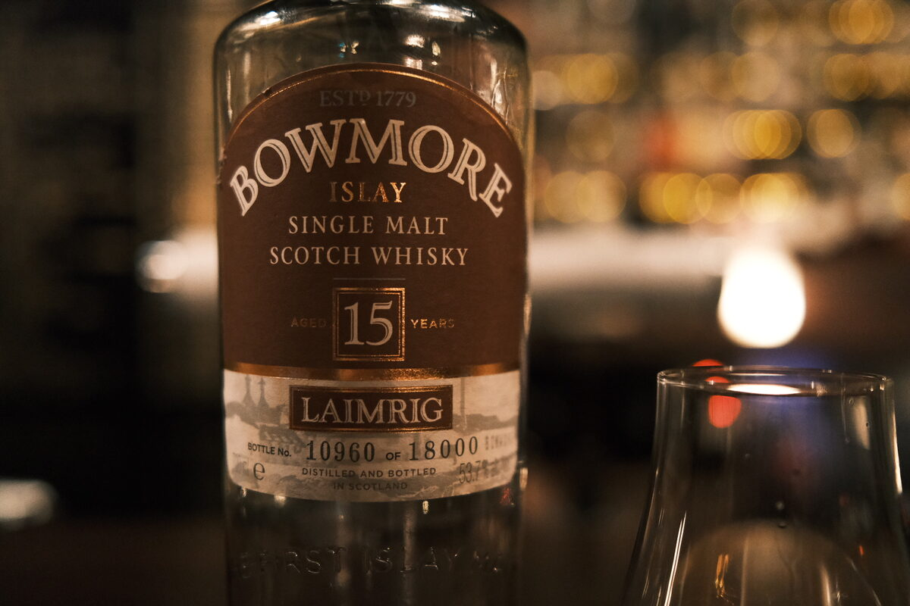

Bowmore "Laimrig" 15 years 53.7% (sherry finish)
Batch 3, apparently. Named OB, not inspiring confidence, but there’s an age statement and it’s cask strength…
Colour Ruby.
Nose Sandalwood, incense, and milk. Herbal smoke and peat. Vanilla custard, chocolate croissants. Dried fruits, raisins. Resinous. Fresh apples. With water, fresh wood and strawberries. Perfumed. Jam and chocolate.
Palate Ash, brown sugar, dried fruits, hazelnuts. Herbal peat and a big billow of smoke, earthy, chocolate. Oily texture. Quite tart, fresh apples and lime juice. Into cinnamon and cloves, oak spices. With water, sweeter, toffee. More dried fruits. Juicy sherry bomb.
Finish Huge smoke. Incense, herbal. Dried fruits and boiled lollies. Lemon juice acidity. Long and warming. With water, brown sugar. Smoke lingers, typical.
Comments Bowmore for sure but the cask is a little over the top. Very pleasant though! 87/100.

Posted by Dominic on 15 Jun 2021